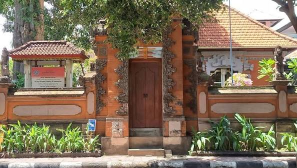
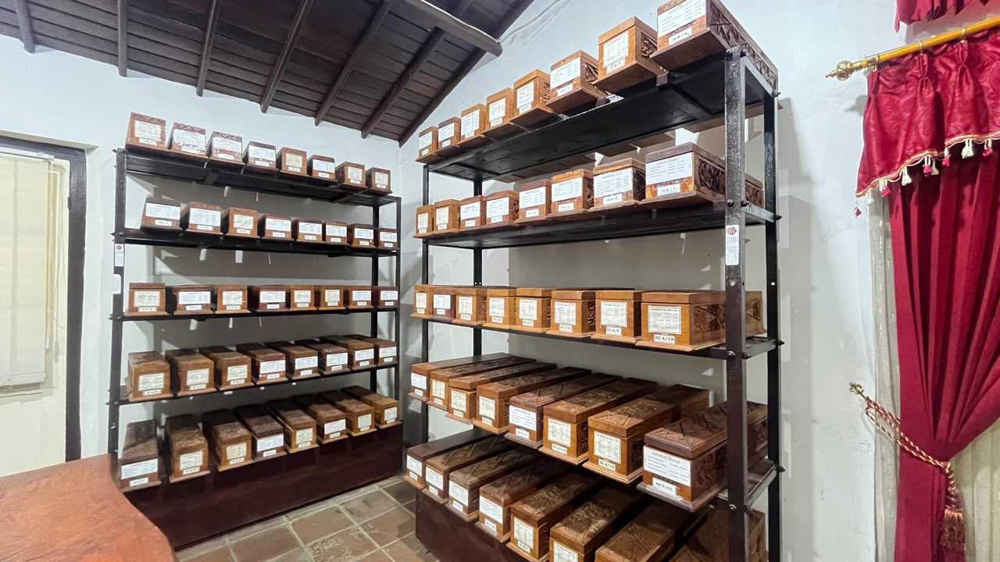

Judul Lontar
Deskripsi koleksi...

Gedong Kertya didirikan pada tanggal 2 Juni 1928 oleh cendekiawan Belanda F.A. Liefrinck dan Dr. H.N. van der Tuuk, dan resmi dibuka untuk umum pada 14 September 1928.
Museum ini berfungsi menyimpan, merawat, dan memelihara ribuan koleksi manuskrip daun lontar, prasasti perunggu, serta buku-buku langka yang mencakup bidang agama, arsitektur, pengobatan tradisional (Usada), hukum adat (Awig-awig), sejarah, dan filsafat Nusantara.
Berlaku untuk wisatawan domestik dewasa.
Berlaku untuk pelajar & anak-anak domestik.
Berlaku untuk wisatawan asing (Wisman).
Jelajahi keindahan suasana interior ruang penyimpanan lontar secara virtual

Ruangan bersejarah yang menyimpan ribuan lontar kuno dalam wadah kayu ukir berharga (Keropak).
Jl. Veteran No.20, Singaraja, Kec. Buleleng, Kabupaten Buleleng, Bali 81117
Senin - Kamis: 07.30 - 15.30 WITA
Jumat: 07.30 - 13.00 WITA
Sabtu & Minggu: Tutup
Deskripsi koleksi...